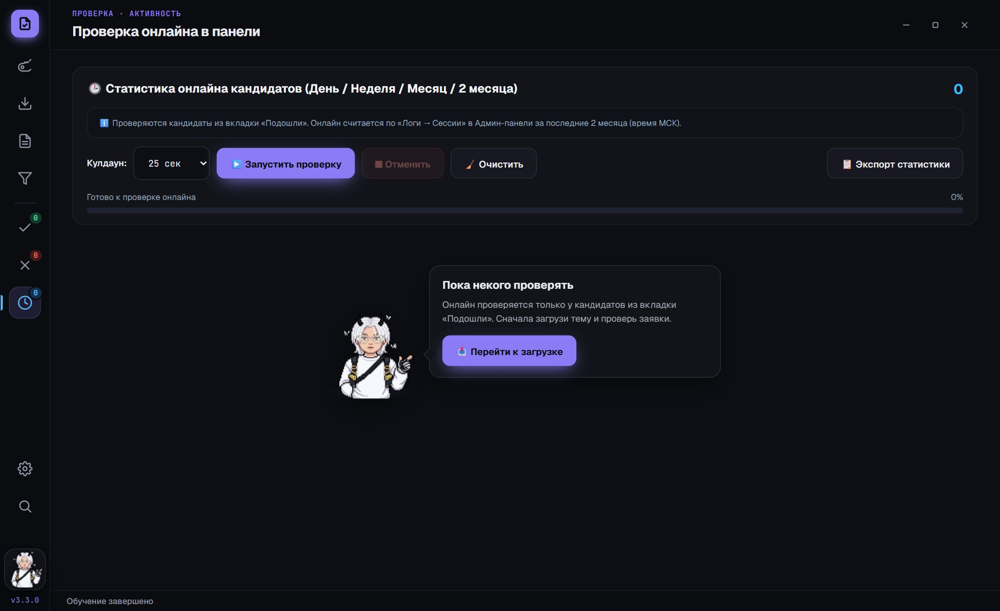
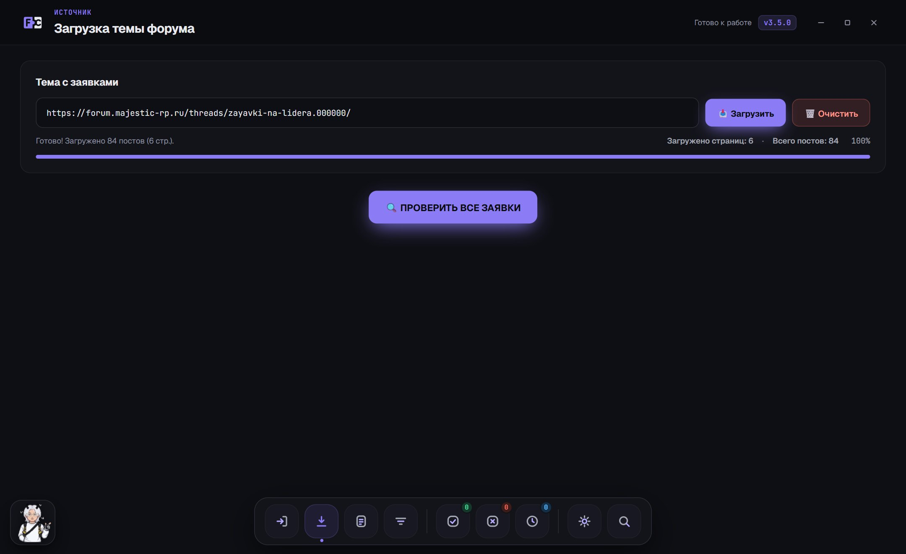
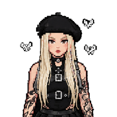
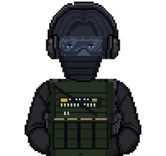

Проверка заявок
за секунды, а не часы
Forum Checker сам загружает тему с заявками, проверяет каждую по вашему шаблону, отсеивает ЧС лидеров и считает реальный онлайн кандидатов.
Всё, что раньше делалось руками
От ссылки на тему до готового списка для обзвона - в одном окне.
Вся тема за раз
Вставьте ссылку - программа сама пройдёт все страницы темы с заявками. Можно догружать новые страницы по одной.
Проверка по шаблону
Возраст, Static ID, Discord, обязательные пункты, запрещённые слова - настраиваете свои правила или берёте готовый пресет.
ЧС лидеров
Своя база чёрного списка. Совпадения по статику или Discord отсеиваются автоматически и попадают в отдельный список.
Реальный онлайн кандидатов
Программа сама соберёт время в игре каждого одобренного кандидата - за день, неделю, месяц и два месяца - и покажет, кто играет прямо сейчас.

Экспорт для Discord
Пинги одобренных, таблица кандидатов, список отказов с причинами и статистика онлайна - копируются одной кнопкой.
Пачкой и вручную
Отметьте нескольких кандидатов и одобрите или отклоните разом. Ошиблись - «Отменить» в один клик.
Под себя
Нижний док или боковое меню, плотность карточек, колонки, масштаб под ваш экран, звуки - всё в настройках.
Обновления сами
Программа сама сообщит о новой версии и откроет страницу загрузки. Ключ и настройки сохраняются.
Тихий тёмный интерфейс
Ничего лишнего - только то, что нужно для проверки.

Помощник, который не даст заскучать
В программе живут персонажи-помощники. Они проведут по всем функциям, подскажут, что делать дальше, и прокомментируют вашу работу - каждый в своём стиле.
- Обучение с подсветкой - гид показывает каждую кнопку прямо в интерфейсе.
- Выбор гида - несколько персонажей с разными характерами.
- Кастомизация - болтливость, свои фразы, «гид дня» при каждом запуске.
- Подсказки по делу - гид объяснит пустой экран и предложит следующий шаг.


Как начать пользоваться
Доступ выдаётся по персональному ключу, привязанному к вашему компьютеру.
Скачайте
Загрузите последнюю версию и запустите - установка не нужна.
Скопируйте код ПК
При первом запуске откроется окно активации с кодом вида FC-PC-XXXX-XXXX-XXXX.
Получите ключ
Отправьте код в Discord - в ответ придёт ключ. Вставьте его, и программа откроется.
Что нового
Программа постоянно развивается - последние обновления.
Загружаем список изменений…
Частые вопросы
Это безопасно? Куда уходят мои пароли?
Никуда. Вход на форум и в админ-панель выполняется во встроенном окне браузера на вашем компьютере, сессия хранится только у вас. Программа не отправляет пароли, куки и списки кандидатов на сторонние серверы.
Что нужно для работы?
Windows 10 или 11 и аккаунт на форуме. Для проверки онлайна - доступ к админ-панели. Компонент Microsoft WebView2 уже есть в Windows 11; на Windows 10 он ставится автоматически вместе с Edge.
Windows пишет «Система Windows защитила ваш компьютер». Что делать?
Так Windows реагирует на программы без платной цифровой подписи. Нажмите «Подробнее» → «Выполнить в любом случае». Скачивайте программу только с этой страницы.
Как получить ключ?
Запустите программу, скопируйте код ПК из окна активации и отправьте его в Discord _pinqx. Ключ работает только на том компьютере, для которого выдан.
Я сменил компьютер или переустановил Windows
Код ПК привязан к компьютеру. Если он поменялся - запустите программу, скопируйте новый код и напишите в Discord, ключ перевыпустят.
Как обновляться?
Программа сама сообщит о новой версии и откроет страницу загрузки. Ключ при обновлении вводить заново не нужно - просто запустите новую версию.
Можно ли настроить проверку под свою фракцию?
Да. Поля и условия проверки задаются под ваш шаблон заявки: можно составить свои правила, вытащить поля из первого поста темы автоматически или выбрать готовый пресет.
Хватит листать заявки вручную
Скачайте Forum Checker и получите ключ в Discord.
Скачать v3.3.0